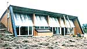
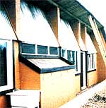
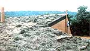
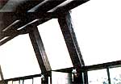
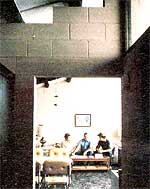
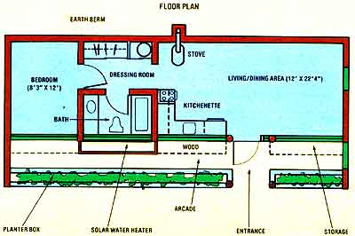

The $15,000 Solar Arcade
March/April 1982
An earth-sheltered house for about the price of a mobile home? It's possible with . . .THE $15,000 SOLAR ARCADE STAFF PHOTOS
In the past year or so, while most archi tects have been struggling to develop plans for homes that could be erected for less than half again their estimated cost, Angus Wyman Macdonald has managed to pare building expense to the bone. The latest brainchild of this Virginia architect (whose no-frills approach to earth-sheltered construction was introduced to MOTHER's readers in issue 67, page 174) is the "Solar Arcade" . . . an 800square-foot, passive solar, earth-bermed residence that can be completed at a cost comparable to the purchase price of a trailer or a modular house.
In fact, Angus has borrowed the best of the techniques usually applied to conventional prefabricated buildings and incorporated them in the Arcade's construction. For example, the designer-with the assistance of Virginia engineer George Allman-has developed a precut, heavy timber roof-framing kit . . . which can be secured to the home's masonry shell by a drill-wielding do-it-yourselfer.
Amazingly enough, the total cost of the Solar Arcade-including the $2,500 framing kit, other materials, and major labor -is $14,757 . . . or about $18 per square foot for the one-bedroom home!
A PREFAB EARTH SHELTER
Two of MOTHER's staffers recently visIted the prototype Solar Arcade-near Orange, Virginia-and found it a light and airy dwelling snuggled into a south-facing hillside. Angus is concerned with making his structures not only functional, but affordable and easy to build as well . . . following a concept he refers to as "anxietyfree, energy-efficient housing". His investigation into, and subsequent use of, modular techniques has grown out of his work experience over the past few years.
"I'm constantly amazed at the low cost of well-finished modular housing, and also at the instant availability of housetrailer accommodation," Macdonald says. He came to that appreciation most strongly during his involvement with the development of a lowcost housing project in Jamaica, where Angus and a six- to eightman crew were able to erect a panelized, three-bedroom dwelling-complete with services-within seven days . . . fore total cost of $6,000.
This astounding accomplishment remained in the architect's mind as he returned to his work in the States. Angus began trying (successfully!) to meet his clients' demands for comfortable, spacious living quarters without the burden of huge mortgage payments (he estimates that eight of the houses he's designed during the past year have been completed for less than $40,000). As his work progressed, Macdonald came to realize that he could combine the energy-efficient attributes of earth-sheltered housing with the labor- and cost-efficient benefits of prefabricated construction ... and the earth-sheltered, passive solar module was born.
TAKING THE HEAT
Angus decided that a south-facing, directgain passive solar system would be the simplest and least expensive way of heating his dwellings. The combination of concrete and reinforced masonry acts as a heat sink, and the material's mass is balanced against the size of the collector area (which consists of sloping fiberglass installed above the windows) to provide optimum performance throughout much of North America. The roof angle permits maximum exposure of the dark-colored interior rear wall in winter and less in spring and fall . . . since an overhang and projecting fins protect the glazing against summer sunlight (in fact, the summer sun's rays will strike the collector area only in early morning and late afternoon hours).
"Through the basic geometry of the plan and the shape of the dwelling, we've devised a house that responds to all seasons . . . without requiring moving parts, complicated machinery, or expensive and unusual building materials," Macdonald points out.
Earth sheltering, of course, plays a large role in helping the Solar Arcade maintain a stable year-round temperature. And, in the part of Virginia where the model home is located, summer cooling is just as important as is winter heat.
Happily, then, the flywheel effect of the earth's crust works throughout the year upon the buried portions of the walls and subgrade floors: The soil takes all summer to warm up and all winter to cool down ... hence, subgrade temperatures are remarkably stable throughout the seasons. At Orange, Virginia's latitude, the ground temperature fluctuates, on the average, only between 58° and 65°F.
Angus has had a chance to evaluate his earth-sheltering theories, too. The house that he designed for the Bresee family, for example (it was featured in MOTHER NO. 67), has maintained a nearly constant 70° interior temperature through the winter . . . without the aid of a woodstove, backup electric heat, or even the acrylic solar greenhouse panels that the builder originally intended to install on the south facfade. Likewise, the house has proved to be comfortably cool during the summer.
The Arcade is designed to incorporate a woodstove for auxiliary warmth, but Angus recommends that homeowners who face building code restrictions install electric baseboard heat as a backup system ... since it's inexpensive, satisfies the regulations, and lends itself well to zoneheating. To facilitate the flow of warm air from room to room, Macdonald has left openings, at ceiling level, between the exposed beams. Furthermore, the home's south-facing exposure all but begs for a solar domestic water heater . . . and Angus's plans make provision for such an installation.
MODULAR MATERIALS
To assemble a Solar Arcade, the builder first constructs the masonry shell, and then frames the residence . . . either using the precut timber kit or cutting the members to specification. (The timber package, which can be shipped to a do-it-yourselfer, is made up of oak beams with mortise-andterion joints, for which pegs and a mallet are provided. The builder will need to use a drill for assembly, though, since the holes are bored after the members are fitted together . . . to insure tight joints. The kit costs $2,500, but a set of cutting diagrams and execution drawings is available, for $50, to those who wish to shape their own framing timbers.)
After the masonry shell has been framed, the roof deck is sheathed with plyform, a heavy oiled plywood chosen be cause of its strength and water resistance. The roof and walls are then covered with Griffolyn triple-layered polyethylene. (Commonly used for truck tarpaulins, this material is completely waterproof, extremely strong, and-since a nylon fishnet is laminated between its layerstearresistant.)
Before the backfilling takes place, foundation drains are installed . . . and, in wet regions, more drains are added at roof level. Finally, a mixture of topsoil and peat moss is layered over the fill earth.
A ROCK-BOTTOM COST
The Solar Arcade's $14,757 price tag can be broken down into $10,627 for materials and $4,130 for labor. (Angus points out that folks who live in urban areas will likely have lower materials expenses, which will probably be offset by somewhat higher labor costs.) Of course, if a person can do his or her own masonry and/or can cut the framing timbers from the diagrams-in addition to finish carpentry and the like-the total building expense could be significantly lower.
The basic Arcade is somewhat Spartan in appearance, leaving the owner considerable leeway in finishing off the home's interior. Macdonald's intention is to construct a livable earth-sheltered house at a reasonable cost . . . therefore, a large portion of the building budget is spent on high-quality, durable components-such as well-made doors and Andersen windowsrather than on "decoration".
Angus believes that a builder, particularly a first-time homeowner who's likely stretching his or her financial resources to the breaking point, will prefer to add ceramic tile, custom cabinetry, or other appointments later . . . as money becomes available. And the dollars should be there for the spending in a relatively short time, since mortgage payments and utility bills will have been kept to a minimum from the outset.
There's an additional financial benefit for a would-be Arcade builder, too: Because of its heavy timber frame and masonry construction, the home has been rated as practically fireproof by a Virginia insurance agency, and premiums to insure the dwelling "against all perils" amount to less than $100 a year.
Plans for the Solar Arcade-which include working drawings, a cost analysis, and a specification booklet-are priced at $100 a set. They may be ordered from Survival Consultants, Dept. TMEN, P.O. Box 21, Rapidan, Virginia 22733. (Angus also encloses a suppliers list ... which contains a description of-and access information forthe specific materials he recommends for waterproofing, structure, and finishing.) Plans for a modified twobedroom version of the Solar Arcade are available, too .. . and any inquiries about the precut heavy timber kit or the cutting diagrams should be directed to the same address.
EDITOR'S NOTE: Survival Consultants offers a catalog of all the organization's standard home plans for $5.00. . . and precut framing kits, similar to the one de- . signed for the Solar Arcade, are available for some of the other houses as well.
Angus Macdonald will also work with clients in helping modify his standard plans, and in providing custom design work.
|
 The one-bedroom Solar Arcade has 800 square feet of living space and can be built-start to finishfor under $15,000. |
 This close-up of the home's faqade shows the framework for a domestic solar water heater (the protruding boxlike structure) and the angled fiberglass glazing that intensifies solar gain |
 The Arcade faces south. Earth berming and topsoil/ peat-moss roofing contribute to the dwelling's stable year-round temperature. |
 The interior features solid masonry construction, durable doors and windows, and a dark floor that absorbs the sun's heat. |
 An inside shot of the passive collector area, which brings light and warmth into the Solar Arcade. |
 The architect left openings between the roof supports to facilitate the room-toroom flow of warm air from the woodstove. |
|
 |
|
|